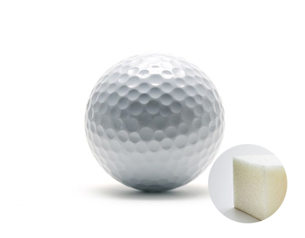

home > 제품소개 > 합성고무
합성고무
- 합성고무SYNTHETIC RUBBER
- 촉매를 가하여 중합시킨 고무를 칭하며 높은 탄성과 강성을 가진 합성 고분자 소재로서, 내마모성, 반발탄성, 기계적 특성이 우수하여 주로 타이어, 벨트, 호스, 신발 등에 사용되는 고기능성 소재입니다.
사업 정보
- 용도
- • 합성고무산업이란 천연고무와 유사한 성상을 지니는 합성고무상 물질 또는 고무상 탄성체가 될 수 있는 가소성 물질인 합성고무를 이용하여 타이어, 신발, 기타산업용 고무제품의 주원료를 생산하는 사업으로서 전방산업부문으로는 타이어, 신발, 자동차 부품, 의료용 장갑 제조산업 등이 있습니다.
- 특징
- • 금호석유화학은 국내 자동차, 타이어 산업의 발달과 함께 국내 최초로 합성고무 생산을 시작하였습니다.
- • 또한 부타디엔, 스타이렌 등을 원료로하여 천연 고무와 유사한 성상을 지니는 합성고무상 물질, 고무상 탄성체가 될 수 있는 가소성 물질인 합성고무를 제조하는 사업으로 영역을 확대하며 장치 산업의 특징을 지니게 되었습니다. 이 밖에도 탄성, 내열성, 내화학성, 내마모성 등 합성고무의 주요 속성을 개선하여 골프공, 의료제품, 신발, 아스팔트 개질제 등 다양한 산업 영역으로 가능성을 확대하고 있습니다.
- • 최근, 에너지효율에 대한 외부 니즈가 증가함에 따라 타이어라벨링 (타이어 효율 등급제) 제도에 최적화된 고기능성 합성고무 SSBR과 NdBR 제품 그레이드의 다각화를 진행하고 있으며, 도로용, 지붕용으로 사용되는 SBS 외 NBR, HSR 등 다양한 제품군으로 시장을 확대해 나가고 있습니다.
- • 특히, 금호석유화학은 라텍스 장갑의 원료로 사용되는 NB Latex 분야의 세계 최대 생산 능력을 보유하고 있습니다. 세계 최초, 세계 유일의 연속 중합 방식을 채택하여 높은 생산성, 품질 균일성 및 고강도 성능이 특징이라 할 수 있습니다. 이를 통해 Global No.1 고강도 의료용 장갑, 내마모성과 내화학성이 뛰어난 산업용 장갑, 신율과 내구성이 우수한 수술용 장갑까지 다양한 라텍스 장갑의 소재 Maker로서 응용 분야와 시장을 확대해 나가고 있습니다.
- • 오랜 기간 축적된 제지용 SB Latex 개발 경험을 바탕으로 특수지용 Latex 및 2차 전지용 바인더 등 특수 목적의 고부가 상품까지 영역을 확대해 나가고 있습니다.
| SBR | NB Latex | SB Latex | NBR | NdBR | SBS |
|---|---|---|---|---|---|
| 256,000 | 640,000 | 82,800 | 87,000 | 60,000 | 138,000 |
제품 종류
-
- SBRStyrene Butadiene Rubber
- 제품정보 더보기 더보기
-
- LatexLatex
- 제품정보 더보기 더보기
-
- NBRAcrylonitrile Butadiene Rubber
- 제품정보 더보기 더보기
-

- NdBRUltra High-cis Polybutadiene Rubber
- 제품정보 더보기 더보기
-
- SBSStyrene Butadiene Styrene
- 제품정보 더보기 더보기
-
- LEADCAPLEADCAP
- 제품정보 더보기 더보기
- SBRStyrene Butadiene Rubber
- KUMHO SBR은 Styrene과 Butadiene을 저온 유화 중합하여 제조한 합성고무 제품입니다. SBR은 천연고무(NR)에 비해 품질이 균일하고 특히 내열성과 내마모성이 우수하며, 타이어, 신발, 산업용품 등의 재료로 널리 사용되고 있습니다.
- 용도
- • 타이어 • 신발 • 고무호스 • 자동차부품
- 특징
- • 가공성 우수 • 천연고무에 비해 내마모성, 내열성 우수
- 제품분류
- • SBR 1500 Series : SBR 1500, SBR 1500NF, SBR 1502, SBR 1502NF, SBR 1502G, SBR 1507L, SBR 1507 • SBR 1700 Series : SBR 1712, SBR 1712G, SBR 1721, SBR 1723, SBR 1739, SBR 1745T, SBR 1783, SBR 1789, SBR 1793, SBR 1778K